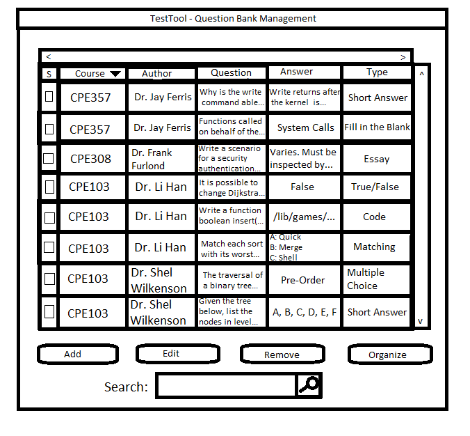

2.3.5. Sorting the Question Bank
In this scenario, the user is sorting the question bank. The sort operation reorders questions in the question bank based on one of seven question criteria listed below.
- Course
- Author
- Question Text
- Question Answer
- Type
- Difficulty
- Suggested Time
For this scenario, the user begins with a question bank populated like Figure 2.3.26 shown previously.
Once the user clicks the "Course" column heading on the previously filled in question bank, the TestTool sorts
all the questions in the Question Bank by Course lexigraphicaly lexicographically in ascending order as shown below in Figure 2.3.38.
Figure 2.3.38: The Question Bank sorted in ascending order by Course
After the question bank is sorted by Course in ascending order, the user then proceeds to sort the question bank by Course once more, only this time the question bank will
be sorted in descending order as shown below in Figure 2.3.39.

Figure 2.3.39: The Question Bank sorted in descending order by Course
By clicking the other column headings, the user can sort by the other criteria as well. The user can only sort by one criterion at a time and the sorting is a stable sort.
Once the user sorts the bank, the new sorted order is saved to the users preferences.
Prev: questionbank-organize
| Next: [None]
| Up: question bank
| Top: index
{kind=link}